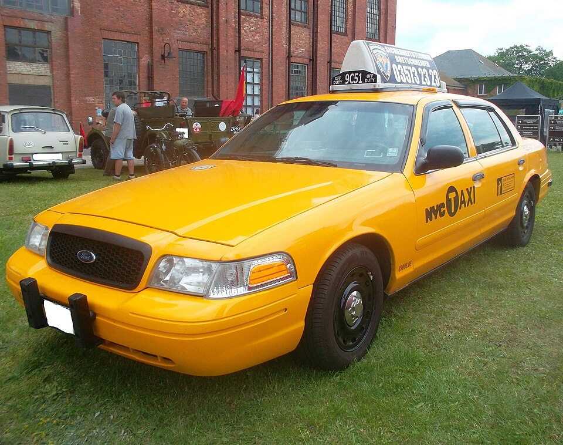

黄色出租车

全局 caption
A broad sunny intersection with marked pedestrian crossings, palms and light-colored buildings. Natural daylight and photorealistic detail. The viewpoint moves slowly forward, keeping a safe distance from the subjects.
对象 caption
A bright yellow Ford Crown Victoria taxi with a black front bumper guard, a large roof advertising sign and black taxi door markings. The taxi drives slowly across the junction from right to left, showing its full side profile and roof sign.